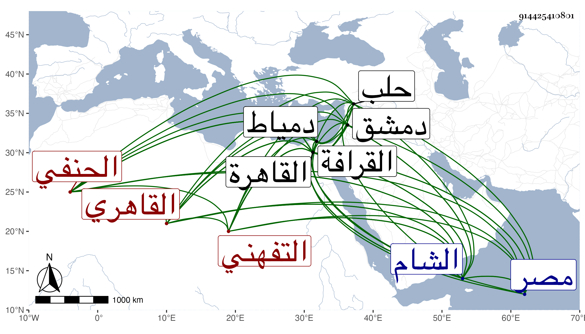

0902Sakhawi.DawLamic.ITO20230111-ara1.EIS1600.914425410801
Biography ID: 914425410801
285
عبد الرحمن بن علي بن عبد الرحمن بن علي بن هاشم الزين أبو هريرة التفهني ثم القاهري الحنفي الآتي أخوه الشمس محمد . ولد سنة أربع وستين وسبعمائة بتفهنا بفتح المثناة والفاء وسكون الهاء بعدها نون قرية من أسفل الأرض بالقرب من دمياط ، ومات أبوه وكان طحانا وهو صغير فقدم مع أمه القاهرة وكان أخوه بها فتنزل بعنايته في مكتب الايتام بالصرغتمشية ثم ترقى إلى عرافتهم وأقرأ بعض بني بعض أتراك تلك الخطة وتنزل في طلبتها وحفظ القدوري وغيره ولازم الاشتغال ودار على الشيوخ ومن شيوخه خير الدين العنتابي إمام الشيخونية والبدر محمود الكلستاني فمهر في الفقه وأصوله والتفسير وأصول الدين والعربية والمعاني والمنطق وغيرها وسمع البخاري علي النجم بن الكشك ومسلما من لفظ الشمس الغماري وجاد خطه وشهر اسمه وخالط الأتراك وصحب البدر الكلستاني لما ولي مشيخة الصرغتمشية قبل ولايته لكتابة السر فأخذ عنه وقرأ عليه ولازمه فلما وليها راج به أمره قليلا واشتهر ذكره وتصدى للتدريس والافتاء سنين وناب في الحكم عن الأمين الطرابلسي ثم عن الكمال بن العديم ونوه به عند الأكابر وصار من أفاضل طلبة الشيخونية حين كان الكمال شيخها يجلس ثاني من يجلس عن يمينه في الدرس والتصوف ، وترك الحكم مدة ولم يلبث أن ولي بعنايته مشيخه الصرغتمشية بعد أن تنازع فيها هو والشرف التباني وحضور التباني لها وكان معه قبل ذلك تدريس الحديث بها رغب له عنه الولوي بن خلدون بمال فكمل له الفقه والحديث بها وكان يذكر أنه بحث مع الجلال التباني والد الشرف هذا في درس الفقه بها فغضب منه فأقامه فخرج وهو مكسور الخاطر فدعا الله أن يولبه التدريس مكانه فحصل له ذلك وأخرج ابنه لأجله وكذا درس بالايتمشية لما ولي الكلستاني كتابة السر وأوصى له عند موته وخطب بجامع الأقمر لما عمل السالمي فيه الخطبة وتزوج فاطمة ابنة كبير تجار مصر الشهاب المحلي فعظم قدره وسعى في قضاء الحنفية بعد موت ناصر الدين بن العديم وكاد أمره أن يتم ثم لما استقر الشمس بن الديري في مشيخة المؤيدية استقر هذا عوضه فيه وذلك في ذي القعدة سنة اثنتين وعشرين فباشره مباشرة حسنة إلى أن صرف في سنة تسع وعشرين بالعيني وقرر في مشيخة الشيخونية بعد السراج قاري الهداية ثم أعيد في سنة ثلاث وثلاثين وانفصل عن الشيخونية بالصدر بن العجمي واستمر قاضيا إلى أن مرض وطال مرضه فصرف حينئذ بالعيني في جمادى الثانية ولم يلبث أن مات بعد أن رغب لولده شمس الدين محمد عن تدريس الصرغتمشية في شوال سنة خمس وثلاثين وصلى عليه بمصلى المؤمني ودفن بتربة صهره المحلي بالقرب من تربة يشبك الناصري من القرافة ويقال أن أم ولده دست عليه سما لأنها كانت ظنت انفرادها به بعد موت زوجته فما اتفق بل تزوج امرأة أخرى وأخرج الأمة فحصل لها غيرة فالله أعلم . وأوصى بخمسة آلاف درهم لمائة فقير يذكرون الله أمام جنازته وسبعة آلاف درهم لكفنه وجنازه ودفنه وقراءة ختمات ، قال شيخنا في أنبائه وكان حسن العشرة كثير العصبية لأصحابه عارفا بأمور الدنيا وبمخالطة أهلها على أنه يقع منه في بعض الأمور لجاج شديد يعاب به ولا يستطيع أن يتركه قال وكان قد انتهت إليه رياسة أهل مذهبه ، ونحوه قوله في حوادثه أنه كتب علي الفتاوي فأجاد وكان حسن الأخلاق كثير الاحتمال شديد السطوة إذا غضب لا يطاق وإذا رضى لا يكاد يوجد له نظير ، وقال في معجمه سمعت من نظمه وقال في رفع الاصر أنه سار في القضاء سيرة محمودة وخالق الناس بخلق حسن مع الصيانة والافضال والشهامة والاكباب على العلم ولما تكلم ططر في المملكة بعد المؤيد كان من أخص الناس به وسافر معه إلى الشام بل استمر إلى حلب مع تخلف القاضي جلال الدين البلقيني بالشام ولذا ذكره ابن خطيب الناصرية في تاريخها وقال إنه كان معظما عند الظاهر واجتمعت به فوجدته عالما دينا منصفا في البحث محققا للفقه والأصول كيس الاخلاق ، وقال التقي المقريزي انه حلف مرة انه لم يرتش قط في الحكم ولا قبل لأحد شيئا ولم يترك في الحنفية مثله ، وقال في عقوده نحوه وانه كان حشما مهابا مشكور السيرة له افضال وفيه مروءة وهو خير من غيره من قضاة الحنفية وله نظم وقال مرة كان بارعا في الفقه وأصوله والعربية حسن السيرة في القضاء باشره على أحسن الوجوه ، وقال الشهاب بن المحمرة كان يعي ما يخرج من رأسه ، وقال ابن قاضي شهبة قال لي السيد الركن بن زمام إنه لما قدم دمشق سألني من أعلم أنا أو الشمس بن الديري قال فامتنعت فألح علي فقلت الديري أحفظ منك وأنت أكثر تحقيقا منه قال فأعجبه ذلك ورضي به مني ، وقال التقي بن قاضي شهبة أنه عزل بسبب تصميمه في الحق وعدم التفاته إلى الظلمة وكان قد كتب علي فتوى تتعلق بابن تيمية ونال فيها من العلاء البخاري لشيء كان بينهما . قلت وجلالته مستفيضة وقد أخذ عنه الجم الغفير من شيوخنا فمن دونهم كابن الهمام وتلميذه سيف الدين وكلهم يذكرون من أوصافه في العلم ما سبق حاصله ، وأما العيني فانه قال مما فيه تحامل كبير : كان أبوه عاميا من الزراع في تفهنة والمتسببين بها فهرب إبنه منه بعد بلوغه إلى القاهرة وخدم بها حمارا لشخص يقال له يوسف الضرير المقري وصار يقرأ عليه في القرآن ثم استقر في كتاب الصرغتمشية مع الصغار ثم خدم شخصا يقال له يحيى الأشقر إلى أن كبر واختلط بالناس وتردد بين طلبة الصرغتمشية والشيخونية وقرأ بعض شيء من الفقه وأصوله على إمام الشيخونية خير الدين العنتابي ثم اتصل بالبدر الكلستاني وحصل له بعض تميز بين الناس فناب في القضاء واتصل ببعض الأمراء فتمول فبطر وطغى فسعى في قضاء الحنفية بالرشي والبرطيل قال ولم أعتقد صحة قضائه وكان صاحب غرض فاسد يبذل أشياء لأغراضه الفاسدة ولم يكن يتوقف على دين عند غرضه النفساني ، وتولى الوظائف بالرشوة ولم يكن أهلا لها خصوصا مشيخة صرغتمش فانه لم يكن لائقا بها بالشرع وشرط الواقف وكل ما تناوله منها كان سحتا وحراما ، ولم يعهد أنه درس كتابا كاملا ولا كتب بيده كتابا كاملا ولا تأليفا ولا جمعا ، وكان في الدعوى كثير الهذيانات والفشارات ، وعزل مرتين بكاتبه ووقع في قلبه نار أحرقته فلم يزل ضعيفا بأمراض مختلفة إلى أن مات فالله يعلم ما كان حاله عند الموت ونحوه قول غيره كان في احدى عينيه خلل ولحيته صفراء غير نقية البياض لأنه فيما قيل كان يبخرها قديما بالكبريت لاسراع الشيب قال وكان فقيها عالما متبحرا في المذهب بصيرا بالأحكام الا أنه كان سئ الخلق وله بادرة ويقوم في حظ نفسه وربما خاصم بعض من تحاكم عنده لغرض ما بحيث يظهر عليه الغضب سريعا لكونه كان إذا حمق اصفر وجهه وارتعد ، قال وواقعته مع الميموني مشهورة من حكمه بسفك دمه وعقد بسبب ذلك مجالس والميموني يحاققه عن نفسه حتى كان من كلماته اتق الله يا عبد الرحمن أنسيت قبقابك الزحاف وعميمتك القطن فبادر حينئذ وهو ظاهر التغير لقوله حكمت بسفك دمك والتفت إلى شيخنا لينفذ حكمه فقال له على مهل حتى يسكن غضب قاضي القضاة وانفض المجلس وخلص الميموني من يده .
